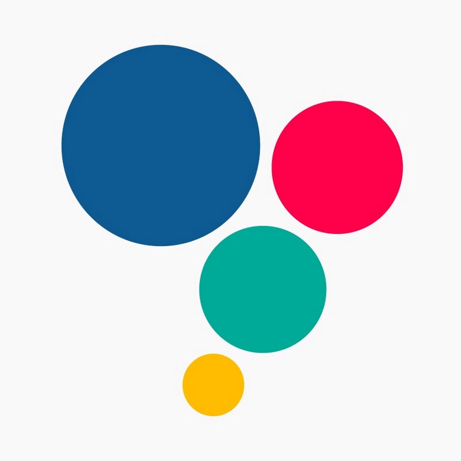
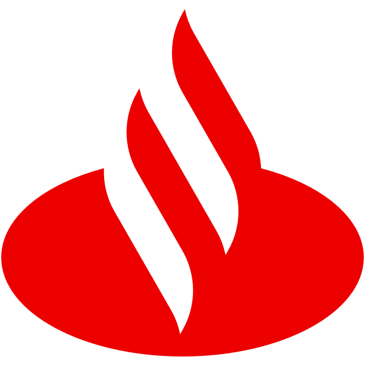

Aprender construindo
Levar conceitos para projetos práticos que possam ser testados e reproduzidos.
PORTFÓLIO PROFISSIONAL
Desenvolvo projetos, testo ideias e compartilho o que aprendo em TI, redes, automação e segurança digital.
01 / SOBRE
Gosto de descobrir o que acontece por trás da tela: como os sistemas se conectam, onde um processo pode melhorar e como transformar uma ideia em algo útil.
Aqui você encontra projetos, experiências e estudos em andamento. Quero mostrar o caminho, as escolhas técnicas e o que aprendi — não só o resultado final.
Levar conceitos para projetos práticos que possam ser testados e reproduzidos.
Explicar ferramentas, escolhas e aprendizados sem complicar.
Cuidar de dados, privacidade e acesso em cada solução.
02 / PROJETOS
Da interface web ao diagnóstico de rede: projetos para aprender na prática, resolver problemas e registrar cada decisão.
Conceito de portal web para reunir recursos e informações úteis em uma interface clara, responsiva e fácil de manter.
O foco está na organização do conteúdo, na navegação intuitiva e em componentes que facilitam futuras melhorias. Detalhes de ambientes corporativos não são exibidos.
$ central-ti --check-network
discovering local hosts...
✓ connectivity check completed
$ _
Painel local em PowerShell que testa a conexão e encontra computadores da rede que respondem nas portas WinRM.
Roda localmente, acompanha sinais básicos da conexão e verifica respostas TCP nas portas 5985 e 5986. Porta acessível não garante autenticação — e a ferramenta não executa comandos nos computadores encontrados.
Um espaço de estudo para mapear redes, testar conectividade e transformar resultados em documentação técnica.
O roteiro combina uma topologia de teste, hipóteses, verificações autorizadas e conclusões. A documentação deve ser reproduzível e não expor endereços, credenciais ou dados de terceiros.
Cada projeto destaca o objetivo, as ferramentas e os próximos passos — sem expor dados sensíveis de ambientes reais.
03 / FORMAÇÃO & RECONHECIMENTOS
Da graduação aos estudos em segurança digital, cada etapa amplia minha base técnica e a vontade de resolver problemas com tecnologia.
ROLE PARA EXPLORAR
Newton Paiva Wyden
INSTITUIÇÃO DE ENSINO
Construindo uma base em computação para entender melhor programação, sistemas, infraestrutura e a tecnologia por trás das soluções do dia a dia.

Espro — Ensino Social Profissionalizante
PROGRAMA NACIONAL
Fui selecionado para o programa nacional que reuniu 40 jovens aprendizes de todo o Brasil com destaque em impacto social e inovação.

Santander Open Academy
FORMAÇÃO COMPLEMENTAR
Formação voltada aos fundamentos da cibersegurança e à proteção de sistemas e dados. O link abre a página oficial do programa; o status poderá ser atualizado conforme a formação avançar.
ÁREAS DE INTERESSE
OUTRA PERSPECTIVA
Explore minha área dedicada à segurança da informação: laboratórios, estudos, ferramentas e relatórios técnicos.
04 / CONTATO
Estou aberto a trocar conhecimentos, conversar sobre projetos e conhecer oportunidades profissionais.
Para trocar ideias ou conversar sobre oportunidades, me encontre no LinkedIn.